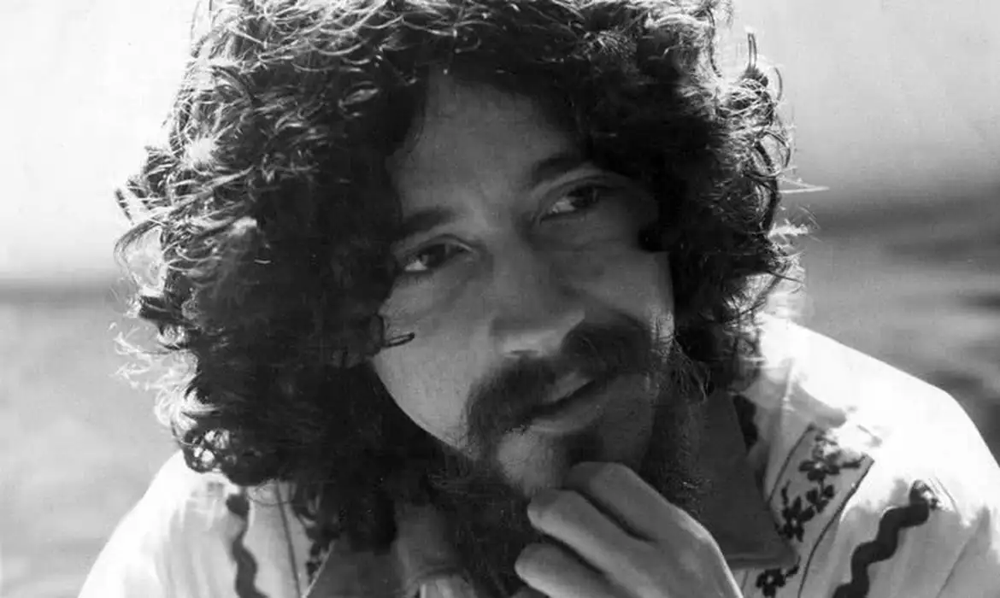

Durante toda a ditadura, existiram vários grupos e pessoas que se opuseram ao regime. Tanto grupos de esquerda/esquerda radical, quanto artistas, músicos e cantores. Alguns dos cantores e suas músicas foram:
A ditadura já foi retrada tanto na época da ditadura, quanto atualmente.
Alguns deles foram: Terra em transe. E ainda estou aqui, filme protagonizado por Eunice Paiva, interpretada por Fernanda Torres
